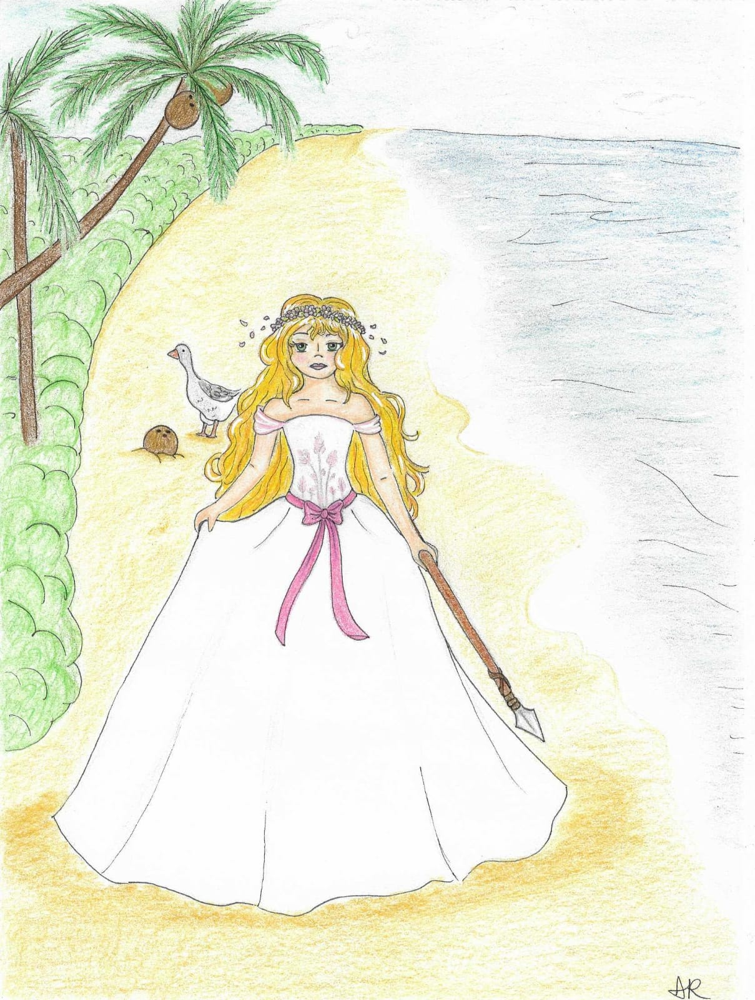

Coco, une jeune femme habillée avec une belle robe de mariée, vit sur une île perdue au milieu de l’océan avec quelques hurluberlus.
Mais un matin, alors qu’elle se rend petit-déjeuner dans le seul restaurant de l’île, un restaurant qui n’a que pour seul plat des nems à la merguez, Coco décide de péter des assiettes en faisant comprendre à Méi, la restauratrice, que sa nourriture est mauvaise et dégoutante et qu’elle n’en mangera plus jamais.
Coco part donc explorer la forêt d’acacia de l’île en quête de nourriture.
Mais tout ne se passe pas comme prévu et Coco finit par découvrir des choses qu’elle n’aurait jamais dû savoir…